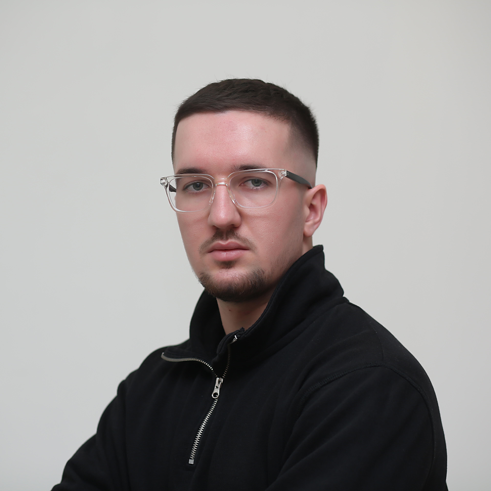

MY RESUME

DREN MUJI
31-May-2000
Male
Fejze Muji Nr.2 Gjilan, Kosovo
+383(44)209870
mujidren5@gmail.com
Education
Role
SCHOOL/UNIVESIRTY
YEAR
CPGA
Student
Vesel Muja
2007-2015
5.0
Student
Gymnasium of natural sciences “Xhavit Ahmeti”
2015-2018
4.72
Student
UBT College – Computer Science and Engineering
2018-2022
8.3
Skills
Working experienced with Java
Working experienced with Database-SQL,MySql
Front-End Development
Working Knowledge of tools like: CoreALM,Jira,Selenium,KITE,Cypress
UI Testing
Experienced with Agile and Waterfall model Azure DevOps,Git and GitHub knowledge
SOFT SKILLS
Excellent communication skills
Result oriented
Enthusiastic and extrovert personality
Team player
Manage stress
Language
Albanian (native language)
English (Excellent)
German (Certified on A2 level)
Driving license
B-Category